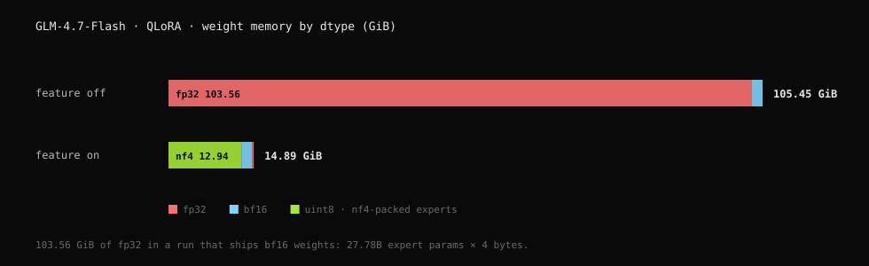
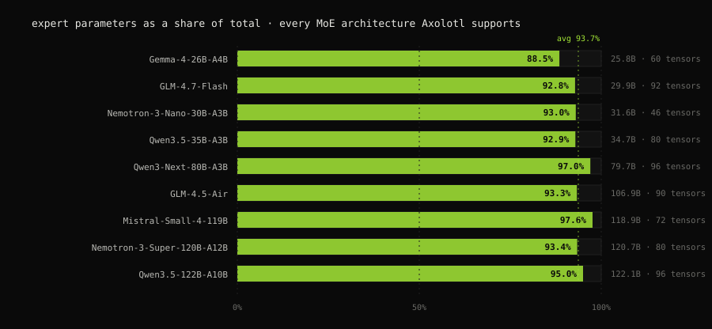

127 GiB → 18 GiB: Fine-Tuning a Frontier MoE on a Single GPU

This is a post about a memory problem I spent longer on than I’d like to admit: how a QLoRA fine-tune of a 30B MoE came to reserve 126.67 GiB of VRAM on my A100s, and how the one config line I ended up adding to Axolotl brings the same run down to 18.23 GiB on a single card.
Why should you care?
GLM-4.7-Flash is a 29.9B-parameter MoE, so roughly 56 GiB of bf16 weights. When I first pointed a QLoRA config at it I expected it to sit comfortably on a single 80 GiB card. That is the whole promise of QLoRA.
It didn’t. On two A100-80GBs it never finished loading at all — it OOMed inside PEFT’s prepare_model_for_kbit_training, upcasting the expert weights to fp32. When I spread it across both cards with device_map: auto so it would at least load, it reserved 126.67 GiB.
| Stock | quantize_moe_experts | Reduction | |
|---|---|---|---|
| Reserved VRAM | 126.67 GiB | 18.23 GiB | 6.9× |
| GPUs | 2× A100, and it still OOMs while loading | 1, with 61 GiB left over | 7.1× like-for-like at load |
My first instinct was that I had misconfigured something. I hadn’t. It isn’t a bug in Axolotl or bitsandbytes either. Both were relying on an assumption about what a linear layer looks like, and Transformers v5 changed it underneath them. This post is how I found that out, and what I did about it.
- Where the memory actually goes: a dtype census
- Who moved my
nn.Linear: what Transformers v5 changed - The fix: quantize the tensor as it lands
- It isn’t just GLM: every supported MoE is exposed
- What it costs: memory, throughput, and the sharp edges
- Reproduce it: one script, two flags
§ 01Where the memory actually goes
When 126 GiB shows up unexplained, the first question I’ve learned to ask isn’t “which layer” but “what dtype is everything in”. So before touching any config, I dumped a census: every parameter in the loaded model, bucketed by dtype, summed in GiB.
| dtype | Feature off (GiB) | Feature on (GiB) |
|---|---|---|
| fp32 | 103.56 | 0.06 |
| bf16 | 1.89 | 1.89 |
| uint8 (nf4-packed) | — | 12.94 |
| Total weights | 105.45 | 14.89 |

103.56 GiB of fp32. In a QLoRA run. On a checkpoint that ships in bf16. I stared at that line for a while.
Once you see it, the number is easy to account for: GLM-4.7-Flash has 27.78B expert parameters, and at 4 bytes each that comes to 103.5 GiB. Every expert weight in the model was sitting in single precision.
So the experts hadn’t simply been missed by the quantizer. They had been promoted from 16-bit to 32-bit — twice what they would have cost if I had configured no quantization at all. My “memory-saving” run was the most expensive way to load this model.
The function responsible is prepare_model_for_kbit_training, which casts any parameter it doesn’t recognise as quantized up to fp32. I understand why it does that: it’s a reasonable default when the leftovers are norms and biases. It stops being reasonable when they are 93% of the model.
§ 02Who moved my nn.Linear
That answered where. The next question was why bitsandbytes hadn’t quantized the experts in the first place.
Because, as of Transformers v5, they aren’t nn.Linear layers any more.
I’d been reading MoE code for long enough that I still had the old shape in my head: a MoE block holds an nn.ModuleList of nn.Linear, one module per expert. That is exactly the surface bnb knows how to work with — walk the module tree, find the Linear layers, swap in Linear4bit.
# before: N separate modules, each one a quantization target
self.experts = nn.ModuleList([
nn.Linear(hidden, ffn, bias=False) for _ in range(num_experts)
])Transformers v5 fused those stacks into single 3-D nn.Parameter tensors:
# after: one 3-D tensor. No nn.Linear anywhere for bnb to find.
self.gate_up_proj = nn.Parameter(torch.empty(num_experts, 2 * ffn, hidden))
self.down_proj = nn.Parameter(torch.empty(num_experts, hidden, ffn))On its own terms I think that’s a good change. A grouped GEMM over one contiguous tensor beats looping over a ModuleList, and the fused MoE kernels depend on it. I would have made the same call.
But it also removed the only handle bnb had. There is no module left to replace, so Linear4bit never gets created, and prepare_model_for_kbit_training later finds a large float tensor and does what it always does with one.
Nothing raises and nothing warns. The run just needs seven times the memory.
This is the kind of bug I’ve come to expect at the seams between libraries. Transformers is right about its own layout. bitsandbytes is right about what it knows how to quantize. PEFT is right about what to do with an unquantized float tensor. Each of them is correct about itself and wrong about the others, and nobody owns the gap.
§ 03The fix
If there is no module to swap, quantize the tensor as it lands.
That is the whole idea behind quantize_moe_experts. I hook set_param_for_module — the function Transformers uses to place each weight on the device during loading — and quantize any 3-D expert tensor the moment it arrives:
original_set_param = transformers.core_model_loading.set_param_for_module
def _patched_set_param_for_module(model, target_name, param_value, *args, **kwargs):
original_set_param(model, target_name, param_value, *args, **kwargs)
if param_value.ndim >= 3 and param_value.is_cuda:
mod_path, _, pname = target_name.rpartition(".")
mod = model.get_submodule(mod_path) if mod_path else model
if not isinstance(mod, (bnb.nn.Linear4bit, bnb.nn.Linear8bitLt)):
if "expert" not in target_name.lower():
return # 3-D, but not an expert
replace_parameter_4bit(mod, pname, quant_type="nf4")
# Release the bf16 tensor so CUDA memory is freed immediately.
param_value.data = torch.empty(0, device="cpu")
torch.cuda.empty_cache()
transformers.core_model_loading.set_param_for_module = _patched_set_param_for_moduletorch.nn.utils.parametrize parametrization holding int8 data plus row statistics, dequantizing on access with caching around the forward.Two details cost me more time than the hook itself.
The first is dropping the bf16 tensor immediately after quantizing. My first version didn’t, and peak memory barely moved — I was holding both copies for the whole load and only freeing at the end. Final memory looked great; the OOM was still there. That line is what keeps peak memory low rather than just final memory.
The second I only found by watching nvidia-smi during load and seeing the reservation jump before a single expert had been touched. Transformers calls caching_allocator_warmup before loading to pre-reserve an allocation sized for the full bf16 footprint of every parameter. That alone gives back all the savings — the allocator has already booked 100+ GiB — so the patch no-ops it:
def _noop_warmup(*args, **kwargs):
pass
transformers.modeling_utils.caching_allocator_warmup = _noop_warmup§ 04It isn’t just GLM
Once GLM-4.7-Flash fit on one card, my obvious worry was that I’d fixed one model. Maybe GLM was unusual in some way and nothing else cared.
It isn’t. I counted the same thing for every MoE architecture Axolotl supports:

| Model | Params | Expert share | Expert tensors |
|---|---|---|---|
| Gemma-4-26B-A4B | 25.8B | 88.5% | 60 |
| GLM-4.7-Flash | 29.9B | 92.8% | 92 |
| Nemotron-3-Nano-30B-A3B | 31.6B | 93.0% | 46 |
| Qwen3.5-35B-A3B | 34.7B | 92.9% | 80 |
| Qwen3-Next-80B-A3B | 79.7B | 97.0% | 96 |
| GLM-4.5-Air | 106.9B | 93.3% | 90 |
| Mistral-Small-4-119B | 118.9B | 97.6% | 72 |
| Nemotron-3-Super-120B-A12B | 120.7B | 93.4% | 80 |
| Qwen3.5-122B-A10B | 122.1B | 95.0% | 96 |
Every one of them keeps between 88.5% and 97.6% of its parameters in fused expert tensors — somewhere between 46 and 96 of them per model, averaging 93.7% of the weights. GLM wasn’t the outlier; it was just the one I happened to load first.
Quantizing everything except the experts is not far from quantizing nothing.
§ 05What it costs
Training-time reserved memory with the feature on, on a single A100:
| Model | Expert params | nf4 | Expert LoRA | 8-bit |
|---|---|---|---|---|
| GLM-4.7-Flash | 27.78B | 12.94 | 24.76 (measured) | 34.12 (measured) |
| Gemma-4-26B-A4B | 22.83B | 10.63 | ~25.6 | ~34.3 |
| Qwen3.5-35B-A3B | 32.24B | 15.01 | ~31.1 | ~43.9 |
I half expected the memory to come out of throughput. It doesn’t. On GLM-4.7-Flash at seq 2048, mbs 2 with packing, the 4-bit path ran 1460–1735 tok/s/GPU against 670–715 for 8-bit, which pays for a row-wise int8 dequant on every forward. Loss curves were the same across all of them, around 1.50 at step 1.
Comparing across rows: absolute throughput varies a lot between architectures, so compare rows within a model rather than across. On the same 4-bit path, Gemma-4-26B-A4B ran 492–703 tok/s/GPU and Qwen3.5-35B-A3B ran 124–220, at different sequence lengths and batch sizes.
Using it
This is the config I run now:
base_model: zai-org/GLM-4.7-Flash
adapter: qlora
load_in_4bit: true
quantize_moe_experts: true
# optional: put LoRA on the expert weights too
lora_target_parameters:
- mlp.experts.gate_up_proj
- mlp.experts.down_proj
lora_dropout: 0It needs adapter: qlora with load_in_4bit: true, or adapter: lora with load_in_8bit: true.
And the sharp edges. I hit every one of these myself, so you probably will too:
lora_target_linearis incompatible. Uselora_target_parameters, and setlora_dropout: 0when you do.- Loading is slower, because quantization runs on every load and there is no cache.
- FSDP2 with 8-bit LoRA spikes for the first step or two before settling; 4-bit doesn’t. FSDP2 can also use more memory per GPU than single-GPU training, since not every layer shards cleanly.
cpu_ram_efficient_loadinghangs with FSDP2 and QLoRA.- The total parameter count is reported wrong. The trainable count is right.
- CUDA only. I haven’t tested ROCm or DeepSpeed.
§ 06Reproduce it
I didn’t want these numbers to rot the next time Transformers moves something, so everything above comes from scripts/bench_moe_quant.py, which emits the same tables for any supported model:
python scripts/bench_moe_quant.py --model zai-org/GLM-4.7-Flash --census
python scripts/bench_moe_quant.py --model Qwen/Qwen3.5-122B-A10B --paramsIf you get a different census than I did, I’d genuinely like to know.
epilogueCount your fp32 first
What started as “why does a 30B model need two 80 GiB cards” turned into a tour of Transformers’ loading internals: fused expert stacks, a quantizer with nothing left to hook, and an allocator warmup that pre-books the memory you were about to save.
Fusing expert stacks into 3-D tensors made MoE models faster, and as a side effect made them invisible to the quantizer. Nothing failed loudly. The model just needed seven times the memory it should have, and the only reason I caught it is that I dumped a dtype census instead of asking for another GPU. I came close to asking for the GPU.
The lesson I keep relearning is the same one from the MXFP4 work: the interesting bugs are almost never inside one library. They live between two, in an assumption one of them stopped honouring. Nobody’s test suite covers that gap, because nobody’s test suite is responsible for it.
So if you’re training an MoE and the arithmetic doesn’t add up: count your fp32 first.